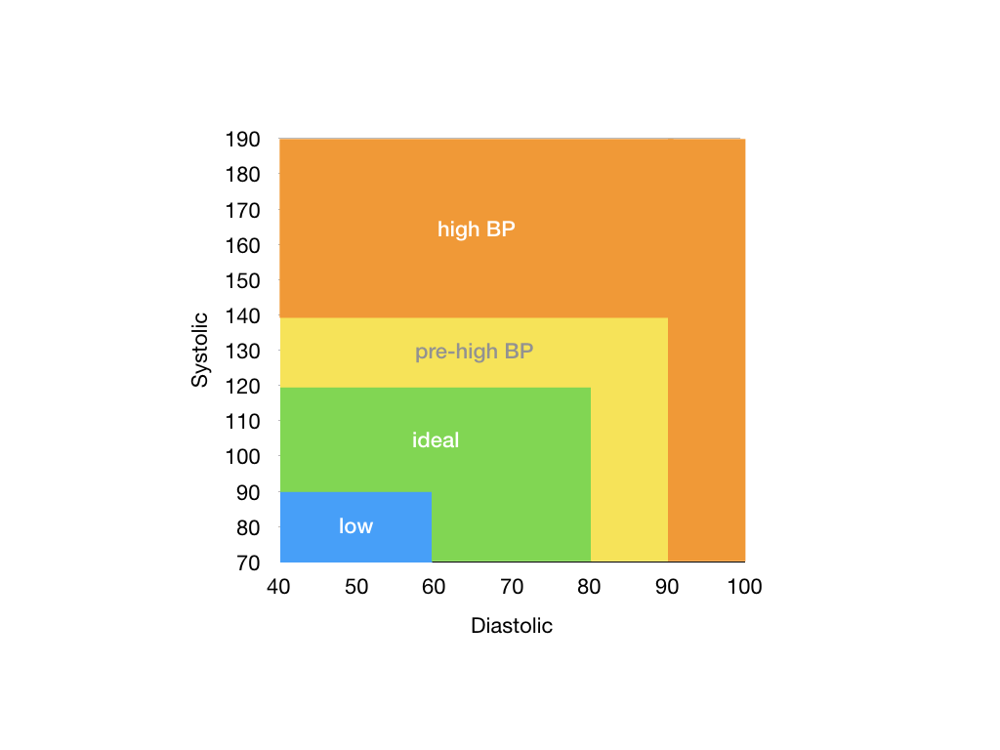

Exercise 2: Date, Pressure, GCD, Leap, Multiple
Deadline
There is no deadline, but we encourage you to complete this exercise before completing Assignment 1.
Prerequisite
You have completed Exercise 0.
Learning Outcomes
Be comfortable writing simple C programs that involve conditional statements and logical expressions.
Grading
This assignment is not graded.
Question 1: Date
A date consists of two integers, a month (1 - 12) and a day (1 - 31). Given three dates (of the same year), we want to find out if the given dates are sorted in increasing order.
Write a program date (source file date.c) that reads in three pairs of integers from the standard input, in the order of \(m_1\), \(d_1\), \(m_2\), \(d_2\), \(m_3\), and \(d_3\). Print yes to the standard output the date (\(m_1, d_1\)) is strictly before (\(m_2, d_2\)), and the date (\(m_2, d_2\)) is strictly before (\(m_3, d_3\)).
Think: Can you break this problem down into a simpler sub-problem?
Sample run:
1 2 3 4 5 6 7 8 9 10 | |
Question 2: Pressure
A blood pressure measurement is given by two numbers, \(s/d\), where \(s\) is the systolic reading and \(d\) is the diastolic reading.
Given the two readings, the following diagram classifies a given blood pressure measurement into four regions: low, ideal, pre-high, and high.

Readings that fall on the borders are considered to be in the region to the top and to the right. For instance, blood pressure 100/80 and 120/70 are considered to fall under the "pre-high" region.
Write a program pressure that does the following:
- Reads in a blood pressure measurement from the standard input as two positive integers,
- Determines which region the given blood pressure measurement belongs to according to the chart above, and
- Prints the region (either
low,ideal,pre-high, orhigh) to the standard output,
Steps 2 and 3 should be solved in the function below:
1 2 3 4 | |
Sample run:
1 2 3 4 5 6 | |
Question 3: GCD
The GCD, or greatest common divisor, of two integers \(a\) and \(b\), is the largest positive integer that divides both \(a\) and \(b\). For example, the GCD of 48 and 18 is 6.
To find the GCD of two numbers \(a\) and \(b\), we repeatedly replace (\(a\), \(b\)) with (\(b\), \(a\) % \(b\)) until we have the pair (\(c\), 0). \(c\) is the GCD of \(a\) and \(b\).
For example, to find the GCD of 48 and 18, (48, 18) \(\rightarrow\) (18, 12) \(\rightarrow\) (12, 6) \(\rightarrow\) (6, 0). The GCD of 48 and 18 is 6.
Write a program gcd (source file gcd.c) that reads in two positive integers, \(a\) and \(b\), and prints their GCD. The computation should be performed in a function called compute_gcd that takes in \(a\) and \(b\) and returns their GCD.
Your program must solve this problem recursively, without using any loops.
Sample run:
1 2 3 4 5 6 | |
Question 4: Leap Year
A leap year is a calendar year containing an extra day to synchronize the calendar to seasons and astronomical events. In the Gregorian calendar, years that are multiples of four (except for years divisible by 100 but not by 400) are leap years.
Complete the program leap.c so that it reads in an integer representing a year from the standard input and prints out "
Your program should include a bool function is_leap_year that takes in the input year and returns true if the input is a leap year and returns false otherwise.
Sample run:
1 2 3 4 5 6 7 8 9 10 11 12 | |
Question 5: Multiple
Given two integers, we want to check if one is a multiple of the other. By definition, 0 is the multiple of any number.
Write a program multiple that reads two integers from the standard input, and prints true to the standard output if one integer is the multiple of the other. Print false otherwise.
Your program should include a bool function is_multiple that takes in the two integers and return if one is the multiple of the other.
1 2 3 4 5 6 7 8 9 | |
Question Credit: Hu Jialun (Cohort 20/21)